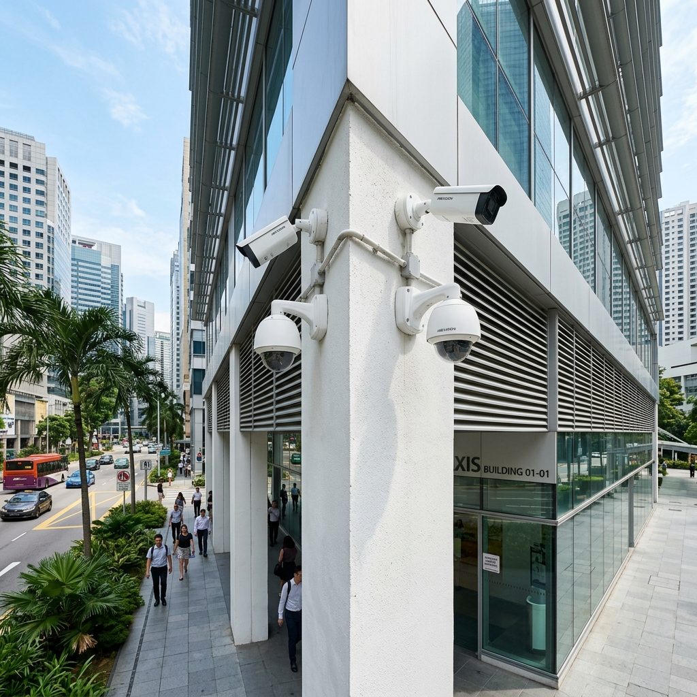
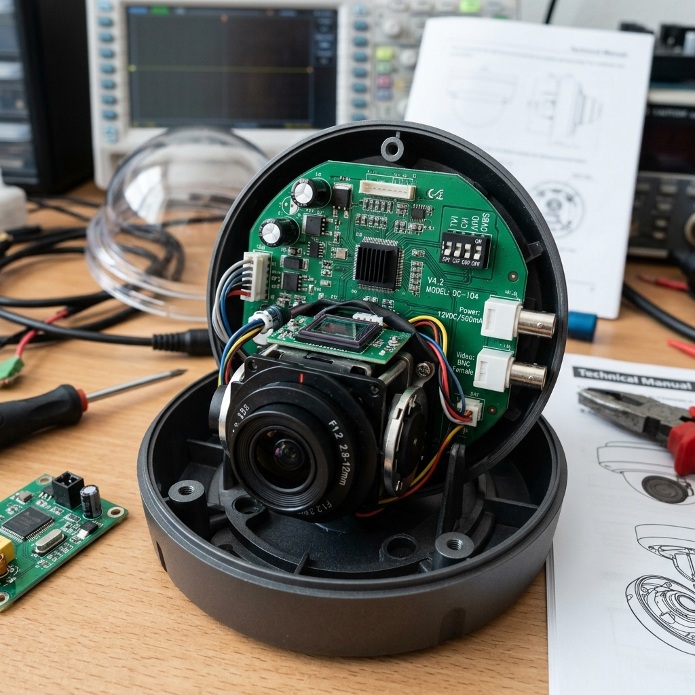
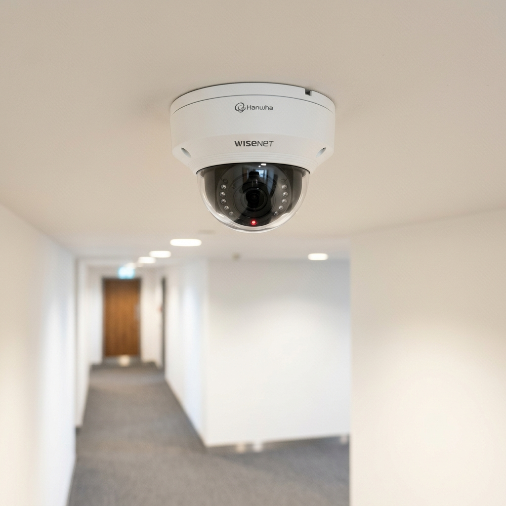
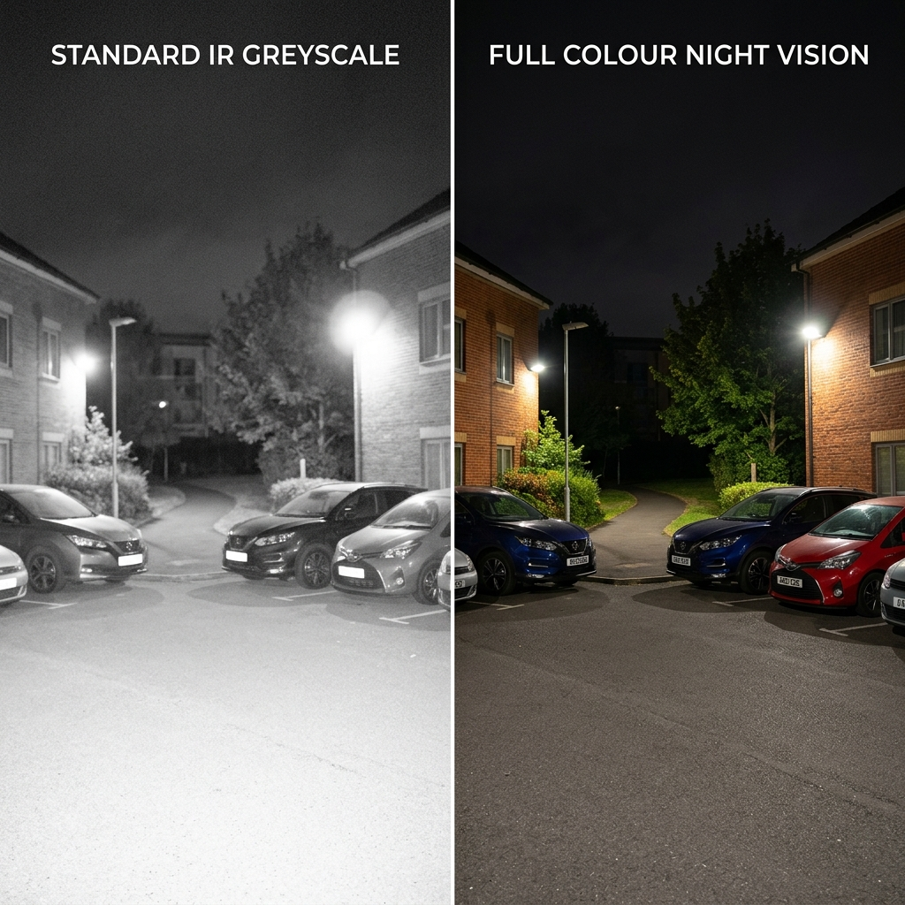

1. Start with the problem, not the camera
Most people start a CCTV project the wrong way. They search for cameras first, pick based on price or megapixels, and end up with a system that looks complete on paper but fails at the moment it matters.
The right starting point is a threat assessment. What are you actually trying to achieve — deter, detect, or evidence? Where are the real vulnerabilities on your site? A camera that needs to hold up in a police investigation has different requirements than one that just needs to discourage opportunistic theft.
We have done this across more than 1,000+ Sites in Singapore. The discipline of asking what problem we are solving before touching a spec sheet is what separates a system that works from one that just has cameras.
Define what you need the footage for before you choose any equipment. Deterrence, detection, and evidence collection are different design goals and they lead to different systems.

2. Which technology to choose
There are three CCTV technologies still in the market. For new installations, the answer is almost always IP. Here is why, and when the others still apply.
Legacy analogue
Invented in 1942 and still appearing in quotes from less scrupulous contractors. Coaxial cable, DVR, maximum resolution around 960 x 480 pixels. Images are grainy, facial identification is difficult even at close range, and there is no path to analytics or integration. There is no case for installing a new analogue system today. If you have one, run it until it fails then upgrade to IP.

HD Analogue (HDTVI / HDCVI / AHD)
HD Analogue cameras transmit high-definition video over existing coaxial cable. Hikvision uses TVI, Dahua uses CVI, Korean manufacturers use AHD — most cameras today support all three via a toggle switch on the unit.
HD Analogue exists as a migration path, not a destination. If you have existing coaxial infrastructure and a tight budget, it lets you upgrade image quality without re-cabling. Swap the DVR for an HD DVR, then replace cameras as they age out. Pragmatic bridge, nothing more.

Network IP
IP cameras transmit digital video over standard Cat5e or Cat6 ethernet. Power over Ethernet means the same cable carries both data and power — one cable per camera. Resolution starts at 2MP and standard commercial work today runs at 4MP, with 8MP increasingly common as prices fall.
The real advantage of IP is not just resolution. It is the software layer: video analytics, AI deep learning, integration with access control, licence plate recognition, cloud connectivity. None of that is possible on analogue. If the system needs to serve you for the next 8 to 10 years, IP is the only sensible choice.

| Technology | Resolution | Best use | Limitation |
|---|---|---|---|
| Legacy Analogue | Up to 960H | Existing system only | No new installations. Poor image quality. |
| HD Analogue | Up to 5MP | Upgrading existing coax | Limited analytics. No cloud integration. |
| Network IP | 2MP – 8MP+ | All new installations | Requires Cat5e/6 cabling or PoE switches. |
For any new installation, specify IP. For sites with existing coaxial cable and a tight budget, HD Analogue is a reasonable interim. If a contractor proposes legacy analogue for a new system, that tells you something about how they think.
3. How many cameras and where
Camera count is often treated as a measure of thoroughness. It is not. We have seen 40-camera sites with worse situational awareness than a well-designed 16-camera system because the design was driven by quantity rather than coverage logic.
The right approach is a site walk. You are identifying:
- Entry and exit points — doors, gates, windows, loading bays
- High-value or high-risk zones — server rooms, cash areas, car parks
- Transition zones — corridors, staircases, lift lobbies where people must pass
- Known blind spots from previous incidents
For a typical landed home, four exterior cameras is a common starting point: front gate, rear garden, and one on each flank. A small office of 50 to 100 sqm typically runs 6 to 8 cameras covering the entrance, server area, and perimeter.
Lenses and angles
A 2.8mm fixed lens gives roughly 90 degrees field of view, which is why we position cameras at corners — one camera covers the full room and minimises blind spots. For long corridors, a wide-angle lens or a camera mounted in corridor mode works far better than a standard camera aimed down the length. Fisheye cameras are useful for open lobbies where you need full spatial awareness from a single point.
PTZ cameras — pan, tilt, zoom — are for manned control rooms with an operator actively tracking targets. They need a human watching the screen to be useful. Do not let a contractor upsell you on PTZ if no one is monitoring live.
Cover the approaches and transitions, not just the spaces. A corridor camera that shows who entered from where is more useful than four cameras inside a room showing the same person from four angles.
4. Choosing your NVR
The NVR is the brain of the system. It manages all camera connections, handles recording, and serves footage for playback. Getting it wrong means replacing it when you expand.
Channel count
NVRs come in 4, 8, 16, 32, 64, and 128-channel versions. Always buy with headroom. If you need 8 cameras now, size for 16 channels. The cost difference is small. The cost of replacing an undersized NVR two years later is not.
Storage sizing
Storage depends on number of cameras, recording resolution, and how many days of footage you want to retain.
| 4TB | 8TB | 16TB+ |
|---|---|---|
| 4 cameras, 4MP, 30-day retention | 8–10 cameras, 4MP, 30-day retention | 16+ cameras or 60-day retention |
These are estimates. Motion-triggered recording at a quiet site stretches storage considerably. Continuous recording at a busy car park eats through it fast.
RAID
RAID protects against hard disk failure — if one disk fails, recording continues and data is recoverable. You need it if your footage has legal, compliance, or safety-critical value: police investigations, insurance disputes, regulated industries.
For homes, RAID is overkill. For commercial premises with more than 16 cameras, or anywhere police are likely to request footage, specify a 4-bay NVR in RAID 5 with enterprise-grade disks. Do not use consumer hard drives in a RAID array — they are not built for those write patterns.
For homes and small offices: single-disk NVR, size generously on storage, 30-day minimum retention. For commercial premises: RAID 5, enterprise disks, 60-day retention, and an alert if any disk state changes. The NVR is not where you cut costs.
5. Night vision and low-light performance
Most incidents happen at night or in poor lighting. This is where many systems fail — not because of a spec oversight but because IR night vision has real-world limits the spec sheet does not mention.
Standard IR cameras illuminate the scene with infrared light and capture it in greyscale. The range figure quoted — 20m, 30m, 50m — assumes ideal conditions: dark surroundings, clean lens, no reflective surfaces. In practice, white walls and reflective objects can wash out the image at half that range. Recessed mounting in a soffit can create lens glare that kills IR performance entirely.
For sites where low-light colour performance matters — car parks, perimeter coverage — consider cameras with larger image sensors. The Hikvision ColorVu and AcuSense ranges, and the Hanwha WDR cameras, produce colour footage in very low ambient light. For identifying vehicle colour or clothing colour at 2am, the additional cost is justified.

6. Integration — where the real value is
A standalone CCTV system is a recording tool. An integrated system is an operational platform. The difference in value is significant, and the marginal cost of building integration in at installation time is far lower than retrofitting it later.
Worth planning for from the start:
- Door access — camera events linked to access control, so a forced door or held-open door triggers automatic camera pop-up on a monitoring screen
- Intercom — Akuvox IP intercoms integrate natively with Hikvision NVRs via ONVIF, the door station camera appears as a regular channel in your recorder
- Licence plate recognition — dedicated LPR cameras at vehicle entry points feeding a database, standard for condominiums and commercial car parks
- Analytics — perimeter intrusion detection, crowd density alerts, loitering detection, all running on the camera or NVR with no additional hardware
- VMS — Video Management Software like Milestone XProtect for sites with multiple locations or more than 32 cameras
For condominium management, the VESTA platform ties CCTV, access, intercom, and LPR into a single dashboard with a resident app. We built it specifically for Singapore condominiums, so it reflects how these sites actually operate.
Tell your integrator at the start what other systems you have or plan to install. Designing CCTV to integrate with those systems from day one costs a fraction of bridging them later.

About the Author
Ler Wee Meng is the Founder and CEO of Securevision. He holds a Bachelor of Engineering (Electrical and Electronic) from the National University of Singapore and a Bachelor of Laws from the University of London. With over 37 years of experience in the security industry, he has personally overseen the design and implementation of security systems for more than 1,000 sites across Singapore, ranging from Good Class Bungalows (GCBs) and large-scale condominiums to industrial complexes and institutional facilities.
He is the principal architect of the Securevision SECURE™ Framework and spearheaded the development of the VESTA integration platform. His direct field experience across thousands of residential units ensures that every system designed by Securevision is practical, maintainable, and built to withstand the unique technical challenges of Singapore's climate and regulatory landscape. His engineering-first approach continues to define the standards for intelligent security integration in Singapore.